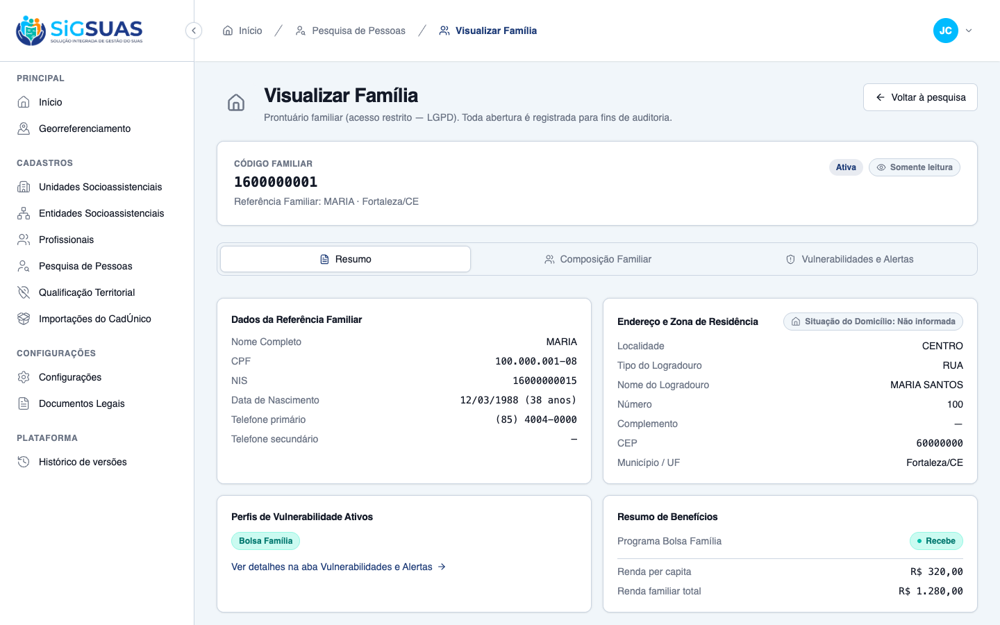
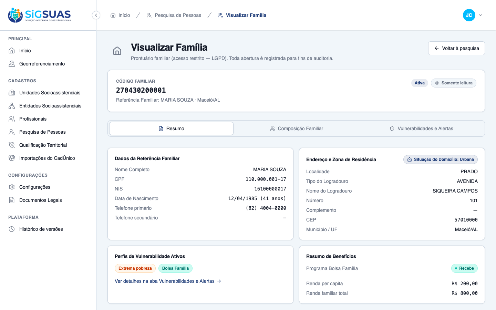
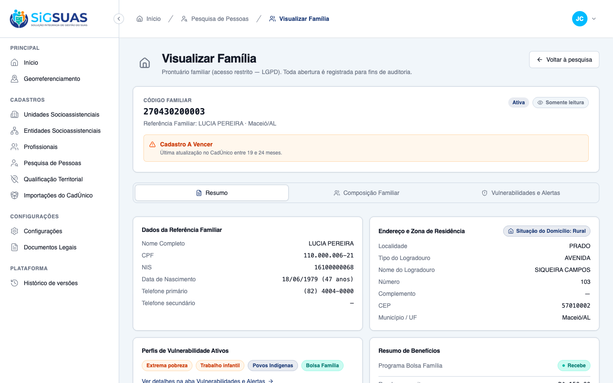

1 Critério de Aceite (CA01) verificado como PARCIAL (◑): evidência de UI ao vivo (navegador) somada à cobertura automatizada de backend. A aba Resumo renderiza os dados civis do responsável ABERTOS (sem mascaramento de privacidade — RN01), o endereço postal estruturado completo e a Situação do Domicílio (Urbana/Rural) de forma explícita, exibindo "Não informada" quando o dado é nulo (nunca inventa default). Suítes automatizadas: Vitest 17/17 (ResumoTab, FamilyHttp, useFamilyDetail) e Pest 30/30 (FamilyDetailsTest, DomicileSituation, FamilyVulnerabilityService). Resultado geral: ATENDIDO.
| CA | Critério | Status |
|---|---|---|
| CA01 | Renderização de dados integrados de moradia (dados civis + endereço postal + zona Urbana/Rural, sem mascaramento) | ATENDIDO · navegador + automatizado |
Critério (Gherkin): Dado que possuo o perfil autorizado e clico em visualizar os detalhes de uma família, Quando a aba "Resumo" é carregada, Então o sistema exibe os dados civis do responsável ao lado do endereço postal completo e traz a informação explícita se o domicílio fica em área Urbana ou Rural, de forma aberta e sem mascaramento.
Como foi testado: 1) Login como coordenador (Master, CPF 15543849079) → gate Selecionar organização → PMM. 2) Abrir a rota exata da HU: /app/cadastros/familias/9fb588c6-…?tab=resumo. 3) Repetir em famílias com domicílio Urbano (c5e89c11-…) e Rural (898d0423-…) do mesmo tenant, para evidenciar a zona explícita. O acesso dispara a auditoria silenciosa LGPD no backend (RN05).



PASS Tests\Unit\Enums\DomicileSituationTest ✓ it exposes the stable codes and pt-BR labels 0.01s ✓ it translates the CadUnico cod_local_domic_fam without inventing defaults PASS Tests\Feature\Api\Client\FamilyDetailsTest ✓ it denies the base operator without the restricted permission (CA05… 0.53s ✓ it grants the operator with the family_viewer role and audits silen… 0.06s ✓ it lets the Master open the record via role bypass, without the res… 0.05s ✓ it blocks immediately when the professional is inactivated, even ke… 0.05s ✓ it blocks on the request right after the role is revoked, keeping t… 0.05s ✓ it returns 404 (not 403) for a family of another tenant (CA08 9760… 0.06s ✓ it does not let a grant in Tenant A open records in Tenant B (CA-ex… 0.06s ✓ it wires the dedicated family_viewer role in the seeder: level 25,… 0.04s ✓ it keeps the restricted permission out of the base roles after perm… 1.07s ✓ it lists family_viewer as assignable by the Master (listAssignable… 0.04s ✓ it returns the enriched record blocks: responsible, address with do… 0.07s ✓ it projects only the ACTIVE vulnerability codes, in canonical order… 0.22s ✓ it lists the full active composition: kinship, age, cpf and educati… 0.10s ✓ it keeps a stable shape for a sparse family: empty vulnerabilities,… 0.06s Tests: 16 passed (112 assertions) Duration: 2.85s